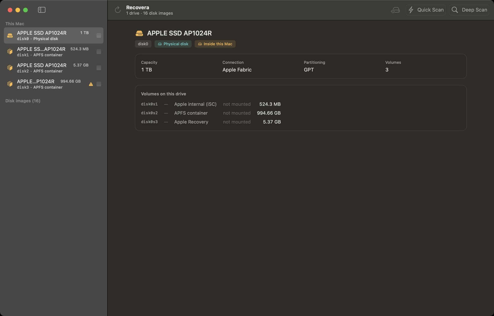
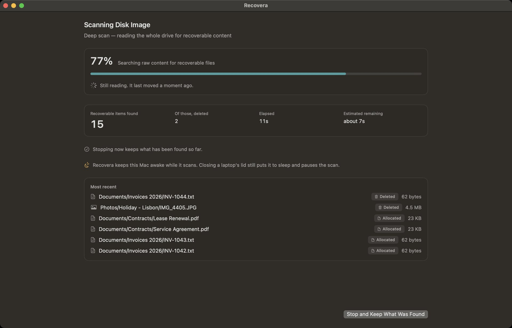
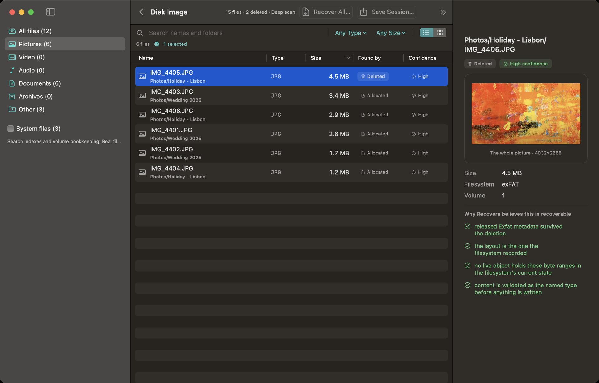
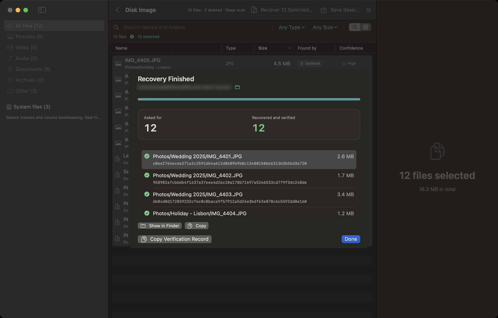

01. DRIVE SELECTIONDrive & Volume Target
Lists physical disks, APFS containers, partition tables, and disk images in read-only mode.
Recovera is professional data-recovery software for Mac, engineered for repair technicians and anyone recovering lost files. It scans damaged, formatted, or wiped drives without writing a single byte to the target media — delivering recovered files alongside a cryptographic SHA-256 verification receipt.
Native macOS Interface
Inspect Recovera's native dark interface across drive selection, deep scanning, file previews, and SHA-256 receipts.


01. DRIVE SELECTIONLists physical disks, APFS containers, partition tables, and disk images in read-only mode.

02. LIVE SCANNINGDisplays real-time file discovery, elapsed time, and keeps the Mac awake during long scans.

03. PREVIEW ENGINEPreview photos and videos before recovering — deleted ones included — so you recover the right files. Large photos can be shown whole with one click.

04. SHA-256 RECEIPTEvery recovered file is checked with a SHA-256 checksum, and the whole job can be copied as a verification record for your client notes.
Media & File Systems
Built to handle cross-platform drives, virtual disk images, and software RAID sets.
External hard drives, SSDs, USB flash drives, SD / CF memory cards, and internal storage of Intel-based Macs (non-FileVault).
Mac: APFS, HFS+
Windows: NTFS, FAT, exFAT
Linux: ext2, ext3, ext4
Scans raw disk images (.img, .dd, .iso) and virtual machine disks (VMDK, VHD, VHDX) directly. A .dmg can be scanned once macOS has opened it.
Reconstructs Apple Software RAID, Linux mdadm RAID, and LVM logical volume sets.
Deep scan parses raw sectors for photo, video, document, and archive headers. Rejoins split video & photo fragments.
Unlocks encrypted APFS drives, read-only, when given the owner's password or recovery key.
Finds deleted files by name on every file system it reads, and recovers quick-formatted NTFS and exFAT drives with their original names and folders.
When a drive's partition table has been wiped or overwritten, Recovera finds the volumes that are still there and recovers their files with names and folders intact.
Technician-Grade Integrity
Recovera never writes to the drive it is recovering from. Every drive is opened read-only, and that is enforced in the code and checked on every build.
The software strictly refuses to save recovered files onto the same drive being scanned, preventing accidental data overwrites.
Every recovered file is verified with a SHA-256 checksum before it is saved, and the results form a verification record you can keep with the job.
Image a failing drive first — good areas before bad ones — and pick up an interrupted image where it left off. Then recover from the image, not the dying drive.
Technician Ergonomics
Recovera is a technician's tool built on transparent forensic standards, not a “one-click miracle app”. Please review these platform boundary rules before purchasing:
Single license for standalone macOS application. Direct download.
One-time payment · No subscription